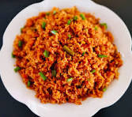

Jollof Rice

DESCRIPTION
Jollof, or jollof rice, is a rice dish from West Africa. The dish is typically made with long-grain rice, tomatoes, chilis, onions, spices, and sometimes other vegetables and/or meat in a single pot, although its ingredients and preparation methods vary across different regions. The dish's origins are traced to Senegal
Ingredients
- 2 cups of long-grain rice
- 1/4 cup of vegetable oil
- 1 onion, chopped
- 2 tomatoes, blended
- 1 red bell pepper, blended
- 2 cups of chicken or vegetable broth
- 1 teaspoon of thyme
- 1 teaspoon of curry powder
- Salt and pepper to taste
- Optional: protein (chicken, shrimp, etc.)
- Optional: vegetables (carrots, peas, etc.)
Instructions
- Heat the vegetable oil in a large pot over medium heat.
- Add the chopped onion and sauté until translucent.
- Add the blended tomatoes and red bell pepper, and cook for about 10 minutes until the mixture thickens.
- Add the rice, broth, thyme, curry powder, salt, and pepper. Stir well to combine.
- Bring to a boil, then reduce heat to low. Cover and simmer for about 20-25 minutes or until the rice is cooked and the liquid is absorbed.
- If using protein or vegetables, add them during the last 10 minutes of cooking.
- Fluff the rice with a fork before serving.
Notes
Jollof rice is a versatile dish, and you can customize it with your favorite proteins and vegetables. Serve it with fried plantains or a side salad for a complete meal.
Enjoy your meal!
For more recipes, go back to the main page.